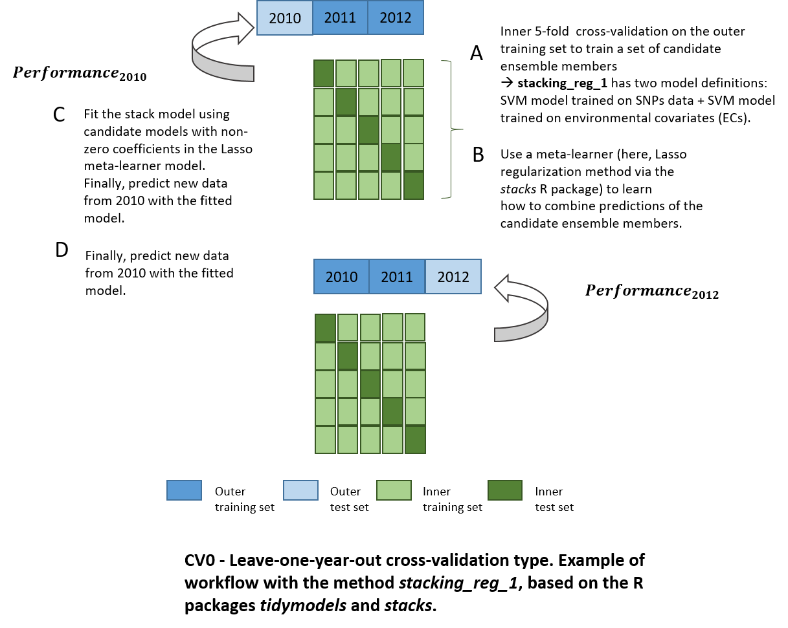

vignettes/vignette_cv_stacking_indica.Rmd
vignette_cv_stacking_indica.RmdFirst, we create an object of class with the function create_METData(). The user must provide as input data genotypic and phenotypic data, as well as basic information about the field experiments (e.g. longitude, latitude data at least), and possibly environmental covariates (if available). These input data are checked and warning messages are given as output if the data are not correctly formatted.
In this example, we use an indica rice dataset from Monteverde et al. (2019), which is implemented in the package as a “toy dataset.” From this study, a multi-year dataset of rice trials containing phenotypic data (four traits), genotypic and environmental data for a panel of indica genotypes across three years in a single location is available (more information on the datasets with ?pheno_indica,?geno_indica,?map_indica,?climate_variables_indica,?info_environments_indica).
In this case, environmental covariates by growth stage are directly available and can be used in predictions. These data should be provided as input in create_METData() using the argument climate_variables. Hence, there is no need to retrieve with the package any daily weather data (hence compute_climatic_ECs argument set as FALSE).
Do not forget to indicate where the plots of clustering analyses should be saved using the argument path_to_save.
library(learnMET)
data("geno_indica")
data("map_indica")
data("pheno_indica")
data("info_environments_indica")
data("climate_variables_indica")
METdata_indica <-
create_METData(
geno = geno_indica,
pheno = pheno_indica,
climate_variables = climate_variables_indica,
compute_climatic_ECs = F,
info_environments = info_environments_indica,
map = map_indica,
path_to_save = '~/learnMET_analyses/indica/stacking'
)
# No soil covariates provided by the user.The function print.summary.METData() gives an overview of the MET data created.
summary(METdata_indica)
# object of class 'METData'
# --------------------------
# General information about the MET data
#
# No. of unique environments represented in the data: 3
# unique years represented in the data: 3
# unique locations represented in the data: 1
#
# Distribution of phenotypic observations according to year and location:
#
# TreintayTres
# 2010 327
# 2011 327
# 2012 327
# No. of unique genotypes which are phenotyped
# 327
# --------------------------
# Climate variables
# Weather data extracted from NASAPOWER for main weather variables?
# NO
# No. of climate variables available: 54
# --------------------------
# Soil variables
# No. of soil variables available: 0
# --------------------------
# Phenotypic data
# No. of traits: 4
#
# GY PHR GC PH
# Min. : 6523 Min. :42.57 Min. : 0.000 Min. :52.71
# 1st Qu.:10179 1st Qu.:59.50 1st Qu.: 2.241 1st Qu.:64.17
# Median :10825 Median :60.97 Median : 3.450 Median :66.68
# Mean :10922 Mean :60.55 Mean : 3.631 Mean :66.85
# 3rd Qu.:11605 3rd Qu.:62.20 3rd Qu.: 4.752 3rd Qu.:69.51
# Max. :15388 Max. :68.16 Max. :22.306 Max. :87.05
# --------------------------
# Genotypic data
# No. of markers : 92430
# --------------------------
# Map data
# No. of chromosomes 12
#
# markers per chromosome
#
# 1 2 3 4 5 6 7 8 9 10 11 12
# 11431 10435 8807 10943 5892 6326 5643 6365 7196 5390 8215 5787The goal of predict_trait_MET_cv() is to assess a given prediction method using a certain type of cross-validation (CV) scenario on the complete training set. The CV schemes covered by the package correspond to those generally evaluated in related literature on MET (Jarquı́n et al. (2014); Jarquı́n et al. (2017);Costa-Neto, Fritsche-Neto, and Crossa (2021)).
Here, we will use the CV0: predicting the performance of genotypes in untested environment(s), i.e. no phenotypic observations from these environment(s) included in the training set, and more specifically, the leave-one-year-out scenario.
The function predict_trait_MET_cv() also allows to specify a specific subset of environmental variables from the METData$env_data object to be used in model fitting and predictions via the argument list_env_predictors.
How does predict_trait_MET_cv() works? When predict_trait_MET_cv() is executed, a list of training/test splits is constructed according to the CV scheme chosen by the user. Each training set in each sub-element of this list is processed (e.g. standardization and removal of predictors with null variance.
The function applies a nested CV to obtain an unbiased generalization performance estimate, implying an inner loop CV nested in an outer CV. The inner loop is used for model selection, i.e. hyperparameter tuning with Bayesian optimization, while the outer loop is responsible for evaluation of model performance. Additionnally, there is a possibility for the user to specify a seed to allow reproducibility of analyses. If not provided, a random one is generated and provided in the results file.
In predict_trait_MET_cv(), predictive ability is always calculated within the same environment (location–year combination), regardless of how the test sets are defined according to the different CV schemes.
Let’s use a meta-learner to predict a phenotypic trait!

Model stacking corresponds to an ensemble method which exploits many well-working models on a classification or regression task by learning how to combine outputs of these base learners to create a new model. Combined models can be very different: for instance, K-nearest neighbors, support vector machines and random forest models, trained on resamples with different hyperparameters can be used jointly in a stacked generalization ensemble.
In the example below, we run a cross-validation of type CV0 with this method:
rescv0_1 <- predict_trait_MET_cv(
METData = METdata_indica,
trait = 'PH',
prediction_method = 'stacking_reg_1',
use_selected_markers = F,
lat_lon_included = F,
year_included = F,
cv_type = 'cv0',
cv0_type = 'leave-one-year-out',
kernel_G = 'linear',
include_env_predictors = T,
save_processing = T,
seed = 100,
path_folder = '~/INDICA/stacking/cv0'
)Note that many methods for processing data based on user-defined parameters and machine learning-based methods are using functions from the tidymodels (https://www.tidymodels.org/) collection of R packages (Kuhn and Wickham (2020)).